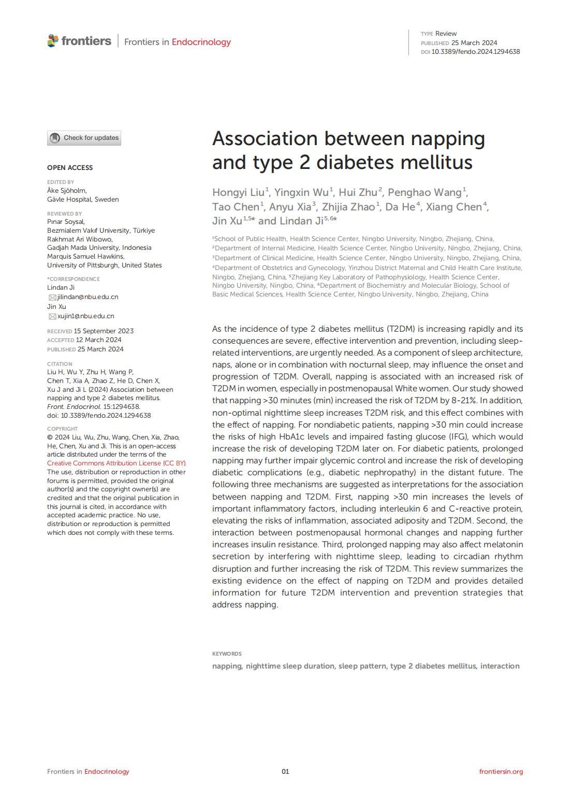
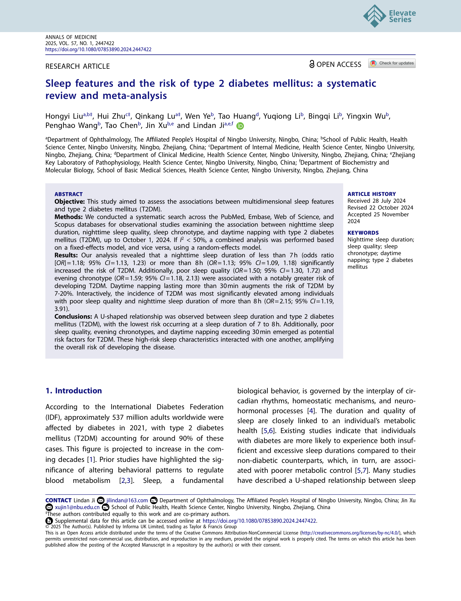
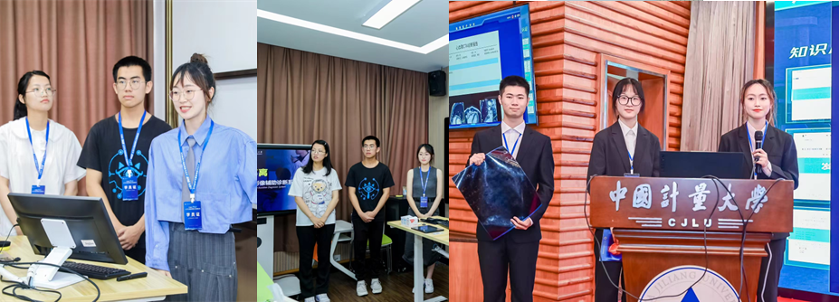
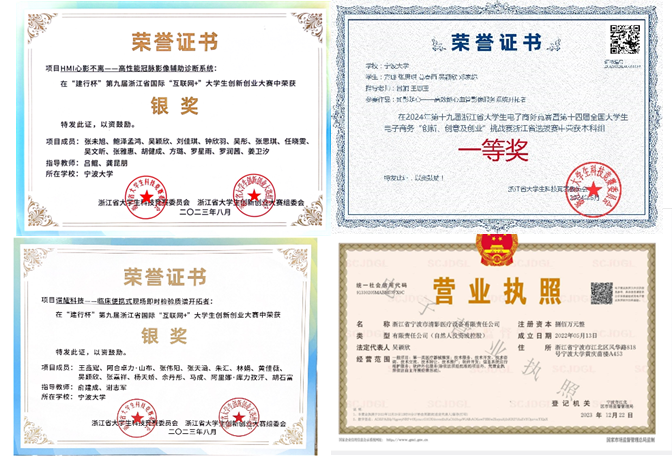
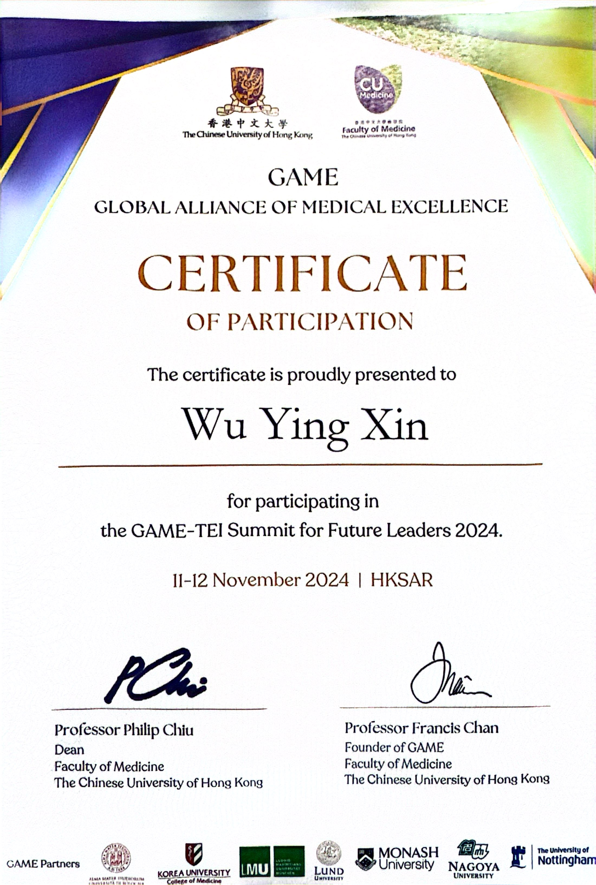
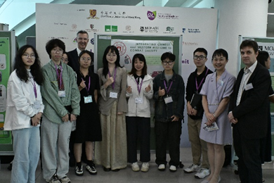

2021 — 2026
PREVENTIVE MEDICINE · HEALTH INNOVATION
Yingxin
Wu
Building evidence-led approaches to healthier lives, from population research to practical health innovation.
Get in touch →01 / PROFILE
Where public health research meets real-world impact.
I am an M.P.H. student at Peking University Health Science Center, with a foundation in Preventive Medicine and Public Health from Ningbo University's Honors Program. My work spans reproductive health, sleep and metabolic disease, and health-technology innovation. I bring a researcher's rigor, a communicator's clarity, and the resilience to move complex projects forward.
02 / EDUCATION & PROFILE
2018 — PRESENT
M.P.H.Public
Public
Health
Peking University Health Science Center
Master's student · Sept 2026 — Present01Current program
2026Program start
2018 — 2021
Zhoushan High School, Zhejiang
Experimental ClassResearch & language
RSPSSMATLABC++EpiDataLiterature reviewData visualizationMandarin · Level 2-AIELTS 7.0 · Speaking 7.0 · Writing 7.0
03 / EXPERIENCE & RECOGNITION
PRACTICE BEYOND THE CLASSROOM
CLINICAL & PUBLIC HEALTH PRACTICE
Zhoushan Center for Disease Control and Prevention
Division of Infectious Disease Prevention and Control
Ningbo Lihuili Hospital · Tertiary Hospital
Clinical department rotations
HONORS
- Zhejiang Provincial Government Scholarship · 3 times
- Outstanding Graduate, Ningbo University
- Merit Student, Ningbo University
- Excellent Student, Ningbo University
OTHER EXPERIENCEVice President, Model United Nations Society at Zhoushan High School; participated in multiple city-level student Model United Nations conferences.
OUTSIDE WORKTravel enthusiast — 20 provinces in China and 7 countries worldwide.
04 / RESEARCH
SELECTED WORK
01
METABOLIC HEALTH · 2022—2024
Sleep, napping
& diabetes risk
Investigated the relationship between gestational diabetes mellitus and sleep duration, drawing on the Ningbo ART cohort and a 200+ paper evidence review.
- Second author · Frontiers in Endocrinology
- Co-author · Annals of Medicine


02
REPRODUCTIVE HEALTH · 2023—PRESENT
Fertility intentions
in contemporary China
A nationwide study of how demographics, perceived social class, relationship and fertility views, social context, and pet attachment shape university students' fertility intentions under China's three-child policy.
- 16,818 valid responses across 200+ universities
- CGSS evidence + national survey
METHODS & CONTRIBUTION
Contributed to questionnaire development for a six-domain survey and to the project's national data collection. The research combines descriptive statistics, logistic and Poisson regression, subgroup analysis, and exploratory factor analysis to identify both established and emerging influences on fertility intentions.
05 / RECOGNITION
INNOVATION & ENTREPRENEURSHIP
01Heart
National Silver Award
Heart
Guardian
China International College Students' Innovation Competition · International Track · 2023
Zhejiang “Internet+” Competition
Silver Award · High-Performance Coronary Imaging Assisted Diagnostic System
Zhejiang E-Commerce Competition
First Prize · 19th Provincial College Student Competition
Zhejiang “Internet+” Competition
Silver Award · Portable On-site Mass Spectrometry for Clinical POCT


06 / LEADERSHIP
Curious by nature.
Collaborative by practice.
01 Selected representative, GAME-TEI Summit for Future Leaders · The Chinese University of Hong Kong
02 Research Assistant, Ningbo Assisted Reproductive Technology Cohort Study Laboratory
03 Vice Minister, Youth Volunteer Association · School of Medicine
04 Legal Representative & Co-founder, Qingying Medical Technology Co., Ltd.

